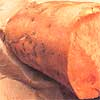

About Sweet Potatoes
KITCHEN GARDEN
By Sara Pacher
November/December 1988
AS A CHILD, ONE OF MY FAVORITE after-school snacks was a warm-from-the oven baked sweet potato. My sisters and I would slit them open, pour in some melted butter, and spoon out the succulent yellow or orange flesh, scraping the last satisfying bite from the skins. Our mother (probably wisely) never pointed out that these garden grown treats were also good for us. Though vitamin content can vary with different varieties, an average-sized tuber contains a whopping 15,000 international units of vitamin A and about half as much vitamin C as an orange. Added to that are worthwhile amounts of protein, calcium, magnesium, iron and carotene, and practically no fat. In fact, sweet potatoes are one of the few vegetables capable of providing the full nutritional needs of human beings, and they're delicious boiled or baked, whole or mashed, and in casseroles, puddings, breads and soups. They can substitute for pumpkin in pies and are used to make candies, ice cream and cookies. (For an unusual salad, grate and mix raw sweet potatoes with green peppers, cucumbers and nuts.) In Japan, where sweet potatoes are the second most important crop, they've long been a popular ingredient both in stir-fry and tempura dishes.
The sweet potato ( Ipomoea batatas ) probably was first cultivated in Peru, and four varieties, along with sweet potato bread, were served to an impressed Christopher Columbus on his fourth voyage to the West Indies. In the sixteenth century, these vegetable natives of Central and South America were introduced to Spain, but they were not grown extensively in the southern United States until the mid-eighteenth century. Today, the crop is found in many tropical and subtropical regions-Polynesia, the Philippines, New Zealand, Australia, Africa, Asia and even in southern parts of the USSR. In most of Europe, however, this heat- and moisture loving plant never gained the popularity of the botanically unrelated Irish potato ( Solanum tuberosum ). The sweet potato is, in fact, a close kin to morning glories, and in tropical climates, it produces small white, pink, redpurple or pale violet flowers. In more temperate regions, the quick-growing vines rarely flower and those that do seldom produce seeds. Even so, it's wonderful to watch this vegetable grow, and because it thrives during the hottest days of summer, it can be one of the prettiest plants in the August garden. It's also beautiful trailing from a hanging basket and can be used as a temporary ground cover. In large containers, sweet potatoes can be grown-and harvested-as patio plants.
What to Grow
Because sweet potatoes are hot-climate natives, they are extremely sensitive to frost. Many varieties require 150 to 170 days of warm growing weather, though some types-the popular copper-skinned, high-yielding Centennial and the good-storing New Jewell, for example-mature in 90 to 100 days. The compact Bush Porto Rico does well in small gardens or on trellises or wires in greenhouses. Old Gold, whose flavor continues to improve for some time after harvesting, is a favorite variety for storing, while other cultivars are prized for their disease and pest-resistance. Nancy Gold, for instance, is resistant to soft rot, while Heart0Gold resists the root-knot nematode and All gold not only resists stem rot but also can ward off a viral disease called internal cork.
RECIPES
Scrumptious sweet potato scallops
Most sweet potatoes have reddish tan skins and creamy yellow to deep orange flesh and are classified as "moist" or "dry," terms that describe the eating texture of the flesh. Moist, deep orange types-like the soft-fleshed, sugary, good-storing Porto Rico (150 days)-are sometimes called "yams" because of their resemblance to the true yam ( Dioscorea alata or D. sativa ), an African plant that can be raised only in tropical climates.
How to Grow Sweet potatoes are grown from slips-sprouts taken from the tubers. While sweet potato slips can be purchased from nurseries, seed houses and garden supply stores, it's easy to propagate them yourself. First, locate some tubers that haven't been treated or waxed to prevent sprouting. Then, some six to eight weeks before planting time, half bury them in a pan or box of rooting medium (moist sand, sawdust or chopped leaves will do) or suspend a potato with toothpicks halfway into a water-filled jar. To be successful, keep these potato parents moist and at a temperature between 75° and 80° F. (The Japanese use the warmth of miniature compost heaps to start potato slips.) Approximately a month later, the first shoots will appear. When they're about six to nine inches long, cut them from the parent potato and remove and dispose of the bottom inch from each slip, because this particular segment sometimes harbors disease organisms.
Sweet potatoes will grow in poor soil that won't sustain most other vegetables, but yields from such plots will be sparse. Ideally, they do best in a well-drained sandy loam with a clay or clay-loam subsoil. Heavy clay, unless well-worked, produces misshapen roots, while a too-light soil creates long, stringy tubers.
Prepare the sweet potato bed in a full-sun area around the time of the last spring frost, digging the ground to a depth of eight to 12 inches in order to allow the tubers' long roots to make use of moisture deep in the earth. To further provide the loose soil so essential to good tuber development, most gardeners prefer to plant in long, wide ridges that are at least 10 inches high. Rows are generally spaced around three-and-a-half feet apart. (A 10-foot row will produce four to eight pounds of potatoes.) Remove all deformity causing rocks and dirt clods, and work in average amounts of compost and wood ashes or rock phosphate. Potassium-rich materials will help the potatoes fill out properly, but, unless you're planting in very sandy soil, go easy with manure or other nitrogen-rich fertilizers that will encourage lush vines, stunt tuber development, and combined with excessive rainfall-can delay maturation. Sweet potatoes like a slightly-to-moderately acid soil (pH 5.2 to 6.7), which also discourages soilborne diseases that can mar tuber skins.
Once the earth has warmed up (usually three to four weeks after the last frost), use a hoe handle to poke holes about six inches deep and 12 inches apart. Bury the slips up to the last leaves, tamp down the dirt gently but well, and water thoroughly. Some two weeks later, mulch heavily with hay or grass clippings to eliminate the need for weeding and watering and to keep the soil soft for root development. Soon the thick, sprawling vines will smother most invading weeds. You might want to occasionally lift the longer vines to prevent them from rooting at the joints, and if rain is scarce, try to provide an inch of water a week until two weeks before harvesting. Use caution, though, as this vegetable survives dry spells-and even droughts-quite well, and over watering encourages rot. Otherwise, once the plants are established, you can usually forget about them until harvest time, because, despite all the pests and diseases that can attack this crop, it's usually remarkably trouble-free.
While white-potatofoliage is toxic, that of the sweet potato can be stir-fried.
What to Watch For
Gardeners in the South, where the sweet potato is such a popular crop, are likelier than those in more northern areas to encounter problems in their sweet potato patches. Handling the plants as little as possible when transplanting and cultivating prevents wounds that might be invaded by disease spores.
Common ailments include black rot, scurf, dry rot, stem rot (or wilt) and soft rot. The first four are caused by fungi. Black rot causes pale yellowish foliage, and its circular dark depressions on the outside of tubers may appear in the field or in storage. Discard potatoes with these marks, and take special care in curing those from the same harvest.
Don't confuse black rot with less serious scurf. The latter makes small, round, dark spots on the surface of the potato, which, though unsightly, don't affect its edibility.
Dry rot, which causes tubers to mummify while in storage, can usually be avoided if the harvest is kept in a cool area (55° to 60°F).
Plants infected with stem rot or wilt may deteriorate throughout the season. Even if they aren't killed off by this disease, the harvest will be poor. This fungus enters the plant through injuries caused by insects, careless cultivation and wind.
Soft rot, another storage disease, causes a watery decay and whiskery growth but isn't usually a problem when the tubers are cured and stored properly.
Fusarium wilt stunts plants, and leaves turn yellowish or brown, wilt and drop off. To prevent it, plant resistant varieties such as Allgold, Coppergold, Dooley or Gem.
Among insects, the sweet potato weevil, a quarter-inch-long bug with a dark blue head and wings and a red-orange body, can punture a plant's stem or even the tuber to lay its eggs. The developing larvae then tunnel through and feed on the vegetable, while the adult feeds on the vine and roots. The weevil also spreads foot rot that creates enlarging brown-to-black areas on stems near the soil line and at the stems' ends. This rapidly multiplying pest is nearly impossible to defeat, but can be avoided by using certified disease resistant seed sweet potatoes, planting in clean ground and practicing four-year crop rotation. If an infestation occurs, destroy all affected plants, then plow up and dispose of any roots left in the infested ground.
Aphids, on the other hand, are easily controlled with garlic sprays, diatomaceous earth, ladybugs or, simply, hard hose sprays. Don't neglect to discourage them, because-aside from the damage they do directly-aphids also transmit internal cork, a disease that mottles leaves and makes them yellowish along the veins and that results in hard, corky islands in sweet potato flesh.
Stunted vines, brown-spotted leaves, and roots with blemishes or poor color are symptoms of underground root-knot nematodes. Here, too, prevention in the form of organically rich soil and disease-resistant varieties is the best cure.
How to Harvest and Store
The longer sweet potatoes stay in the ground, the richer the yield and the higher the vitamin content. However, once the vines are blackened by frost, the tubers quickly become vulnerable to rot. Therefore, unless you can harvest immediately after the first cold spell, it's best to dig the potatoes soon after the leaves begin to yellow. Pick a sunny day when the soil is dry, because roots which are harvested when the ground is wet can shrink considerably when stored. Sweet potatoes can be found growing a foot or more from the plant, so use a potato or spading fork to start digging from the outside of the row, remembering that any cuts or nicks in the tender skins will encourage spoilage.
Leave the tubers on the ground for several hours-but no longer-after digging, then move them to a well-ventilated place with temperatures at around 85° to 90°F for 10 to 15 days. (Some people place them near hot water heaters.) Once cured, store the potatoes at around 55°F with a humidity of 75 to 80%. If cured and stored properly, they will keep for several months, particularly if handled as little as possible until they are ready to be used. In fact, during curing and storage, some of the sweet potato's carbohydrate changes from starch to sugar, causing the flavor to improve with age.
Sweet potatoes can also be frozen, canned or dried. To can them, cook washed potatoes in boiling water for 20 to 30 minutes until they're partially tender. Then slip off the skins and cut the flesh into uniform pieces. Pack these into jars, leaving an inch of head space, and cover them with boiling water. Process at 10 pounds of pressure for 55 minutes for pints and 90 minutes for quarts.
To freeze, cook the washed tubers for about an hour until they're tender. Peel them, cut or mash them, and pack them into containers to be stored in the freezer.
Thin slices dried for several days in the sun or in a low oven produce tasty ("bet-you can't-eat-just-one") sweet potato chips.
SUSAN SAYS
MOTHER'S GARDENER, SUSAN SIDES, shares a few thoughts on sweet potatoes:
The verdant, luxuriant sprawl of heart shaped leaves-the aboveground part of the sweet potato-always makes me think of it as a houseplant of tropical origin. I even imagine that the ones in my garden have somehow come from pots on verandahs and side tables throughout the neighborhood. I picture the imprisoned plants sending out long, swift runners during the night and escaping triumphantly to stretch their orange toes in the great outdoors between my sweet corn and butter beans.
When a dear friend of mine named Yung Li heard me tell of this, she laughed, saying, "Obviously your neighbors aren't of Asian descent." She then showed me how she kept those tender tips pinched back to use as a tasty addition to stir-fry. You can use older leaves, she cautioned, but they won't have that melt-in-your-mouth texture. At her insistence I tried some-both in a stir-fry dish and a la carte. And they truly are delicious.
"No," said Yung, "a sweet potato vine wouldn't have a chance in China of running away from our house. We nip that kind of nonsense in the bud."
|
 © PHILIPPE-LOUIS HOUZE |
 © PHILIPPE-LOUIS HOUZE |
© PHILIPPE-LOUIS HOUZE |
|
|
|
|